Panels can be assigned group names from their settings window. Panels which belong to the same group are broadcasted notifications when a query from other panels or a time picker panel undergoes changes in its values. So if a user changes values of the query or time picker panels and clicks search, the changed query/ time parameters are passed to the panels in the group and they update their results. Panels which are not part of any group execute the query which is specified in their settings. The Fields panel and the Table panel should be in the same group if you want to toggle visibility of fields in the Table panel via the Fields panel.
This panel allows specifying the time range of the records fetched. You can select the time range in three ways,
a) Relative - Select from a set of specified time ranges relative to current time (Time ranges available can be configured through settings)
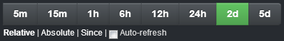
This will fetch the results as per the query for the last 2 days (previous 48 hours)
b) Absolute - Specify the time window for the log records to be fetched
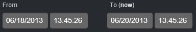
c) Since - Specify a time since when you want to fetch log records
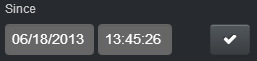
The auto refresh checkbox allows refreshing the results on an interval which is configurable through the panel settings.
This panel allows the user to save their dashboards or load previously saved dashboards. Users can also set or clear their dashboard defaults.
The dashboards can be saved as a file on the user's computer or can be saved remotely on the elastic search server or as a gist. The dashboards can then be loaded from the corresponding sources.
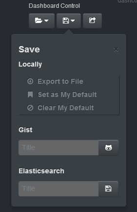 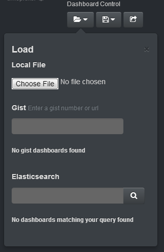
Users can share their dashboards with other users by generating a link using the share button.
The options visible to save and load can be controlled from the panel settings. The settings also allow specifying the time to live for shared dashboard links.
You can specify a search query and a field in this panel. The panel then returns all the different values the field takes in the results of the search query. These different field values are then passed as a query to the panels which are in the same group as the Derive Queries panel. The panel can be configured to exclude certain terms for the aggregation counts.
You can configure the panel to get a top 'x' number of different values for the field.
The histogram or hits panel can be used in harmony with the derive queries panel to view aggregated count for the different values a field takes in the search queries' results.
For example, the following query is to find all records which are from a source host whose name starts with "n".
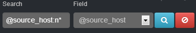
The panel will fetch the top 5 most common values for the "@source_host" field from the results. These values will then be broadcasted as queries to other panels in the group. The following screenshot shows how the values are passed to a string query and histogram panel.
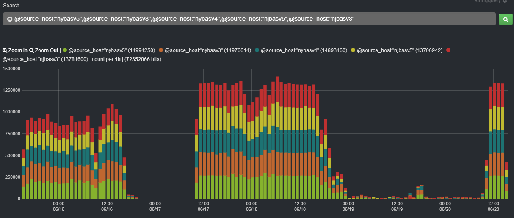
Only panels which support multiple queries (histogram, hits etc.) will show results for all field value queries. Other panels which don't support multiple queries (Table, Pie etc.) will show results only for first query (first field value).
This panel allows for query input which can then be broadcasted to other panels in the group. All the panels update their results as per the query broadcasted. This panel can be used as a central control for the results displayed in the various panels in the same group.
This panel also supports multiple queries (can be enabled from settings) wherein multiple queries can be broadcasted to the group.
For example, we want to find all the log records in the past 6 hours which have a source path as "/bb/data/act.log" and are from a source host whose name starts with "p".
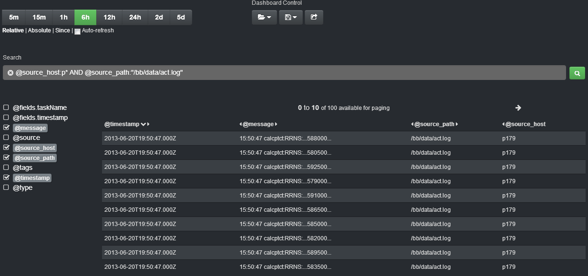
Only panels which support multiple queries (histogram, hits etc.) will show results for all queries. Other panels which don't support multiple queries (Table, Pie etc.) will show results only for first query.
Displays the total number of hits for a broadcasted query or for queries configured as part of the panel itself.
The hits can be viewed as a simple list, a bar chart or a pie chart. This panel has multiple query support and can display number of hits for multiple queries.
For example, consider the string query panel setup as a multiple query panel to find log records having source host values that start with "nj", "ny" or "p". The hits panel is configured to show a pie chart displaying the number of hits these queries will fetch relative to each other.
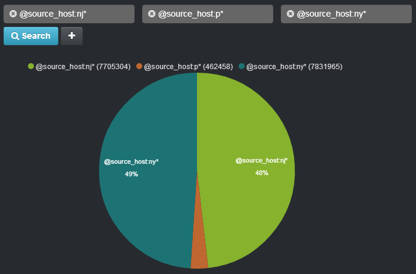
Shows a tabular view of the results returned for a query.
The fields displayed in the table can be controlled via the panel settings. They can also be controlled via the Fields panel when both the panels belong to the same group.
This panel also allows highlighting search terms in fields amongst the results. The columns in which the search term is to be highlighted can be selected via the panel's settings.
For example, consider a query in which we search for a particular term in the message field of log records. In the panel settings, the field "message" has been selected to be highlighted. The panel will highlight the message field of every row in the results where the search term was found. The arrow on the timestamp column indicates that the results are currently sorted by timestamp. The sort order can be changed by clicking on the headers of the other columns.
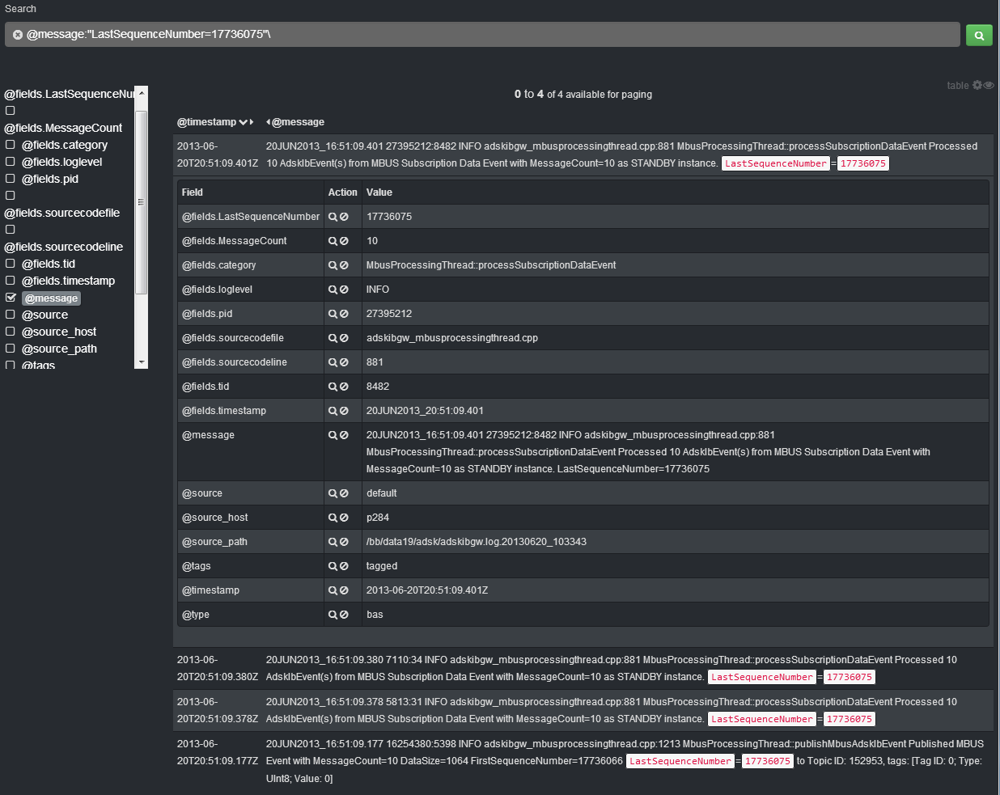
A row in the result can be clicked to view all the field values for that row in a sub table. The action column in this sub table adds the field value (or NOT's it) in the query of the panel (not the group). A Field panel, if any, will also get updated.
The number of results fetched can be controlled from the panel's settings.
Displays all fields returned as part of the results of the group query. Visibility of columns in the corresponding Table panel in the same group can be change via this panel.
You can click on the fields to see all the various values the field takes in the query result set for the group which it is a part of. The dialog displays all the values the field takes in a table. The table has an action column, clicking on which adds the field value (or NOT's it) in the query of the entire group.
For example, consider that we made an initial query to get all log records having a source host whose value starts with "p". The fields in the panel which are checked are shown in the results. Clicking on a field opens up a dialog which displays all the different values the field takes in the result.
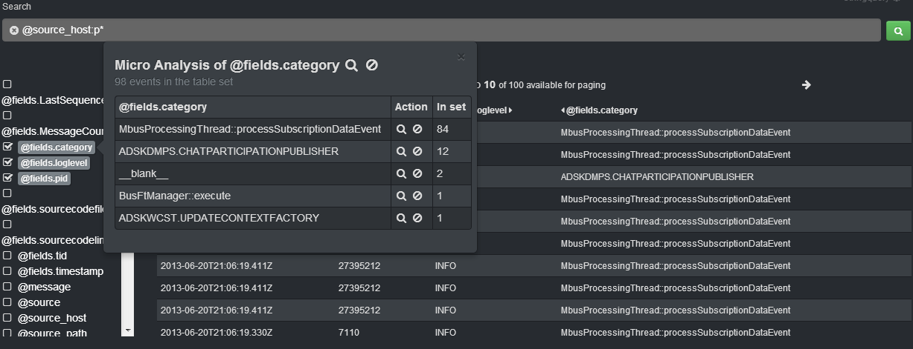
Clicking on the search icon for a value adds it to the query and a new search will be performed along with that value. If we clicked the second value, the search will be tailored to query with clicked value.
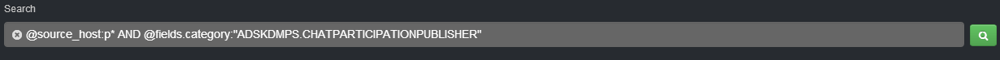
The Field panel does not have the facility to have a query of its own and has to be used in conjunction with other panels in the same group for initial loading of field values.
Updating the query of a Table panel in the same group refreshes the Fields panel as well.
The stats panel is useful for viewing aggregated results of a field grouped together by another field. The different aggregates available are max, min, average, sum and count. The results of a stats query are displayed in a table similar to the table panel. The stats script call is discussed in detail in the Scripts section of this document.
For example, suppose we want to count for each source host, the number of records which have the field "@fields.tid" with value 16 and for each source host, we also want the min and max value that field takes.
The query will be something like this,
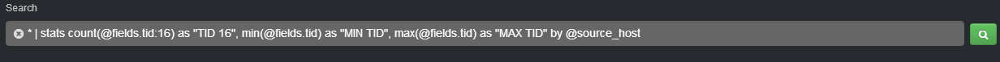
The results for the above query will be displayed as,
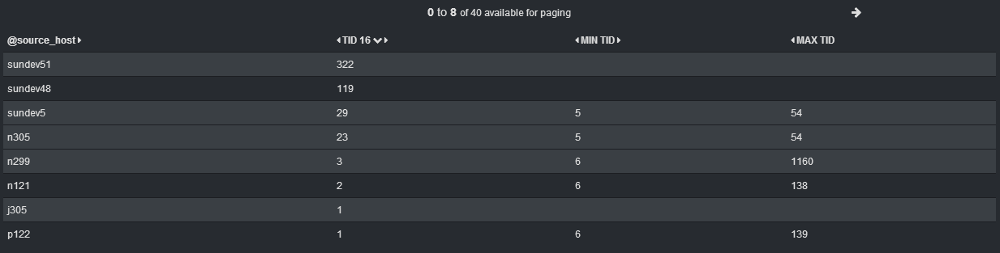
The panel allows sorting and the number of results fetched depend on the paging settings. Sorting is only performed on the number of results already fetched unlike the table panel where a sort action queries the server again to get the data as per sorted column.
The panel can be configured to have its own query or can receive a query from the string query panel.
Allows sorting the results of the Table panel. The panel should be in the same group as the target Table panel. The screenshot below shows an example of the panel laid out with a fields and table panel.
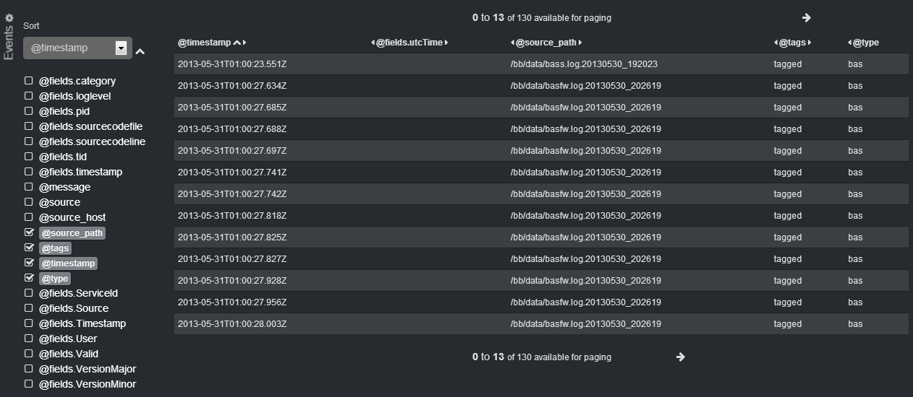
Displays a time based distribution of the result set as per the time frame selected from the time picker. The time frame can also be changed by dragging a rectangle over the histogram.
The histogram will always show time along the X axis. The Y axis can either be a count, min, max, mean or total. Every aggregate function except count will require a field on which you want to perform the aggregate. (This field has to be a numeric field)
This Panel supports multiple queries and you can display the results of multiple queries overlaid over each other or stacked up over one another.
This panel can be configured to have its own set of queries or receive queries from other panels in the group. (String Query, Derive Query panel etc.)
For example, the following screenshot is of a histogram panel configured as a line chart with a line fill. The string query panel is configured in multi query mode and broadcasts the two queries to the histogram panel. The panel plots the results of the two queries as two line charts overlaid over one another.
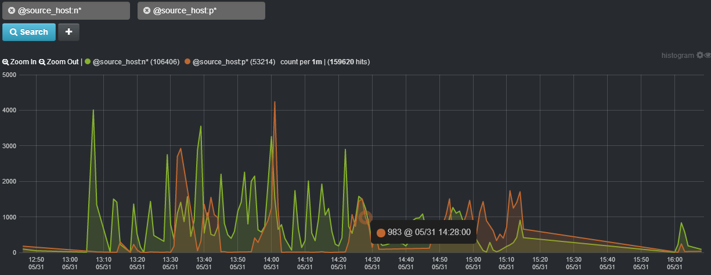
The pie chart operates in two modes,
a) Terms mode
In this mode, by default, you can view a breakup of top ten most common terms in all the fields of the log records.
It can be configured to view up a breakup of the most common top 'x' number of terms in a particular field.
For example, in a pie chart, the query is configured to get all log records. The field to construct the pie chart is the source host. And the pie chart is broken down as per the top ten values the field "@source_host" takes.
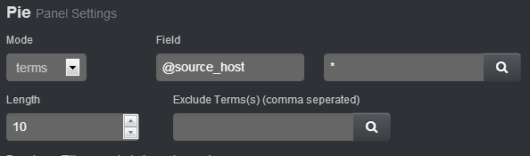
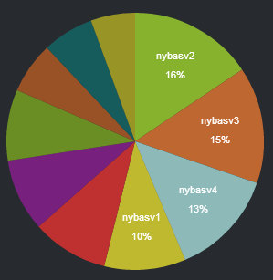
The query for the pie chart can be either broadcasted from other panels or can be configured to be panel specific.
b) Goal mode
In the goal mode, you can specify a goal count for a query and then view how much is the hit percentage for that query as compared to the goal count.
The pie chart will display the hits as a percentage with respect to the configured goal count.
For example, the number the log records which have a source host name that starts with "p" is 122657. We want to set up the pie chart to display what percentage of these have the value p122. We will hence set the goal count as 122657 and the query to get only hits for source host p122.
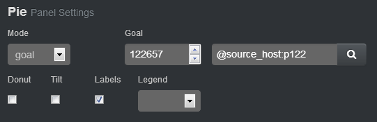
The pie chart will display the number of hits as a percentage of the goal count.
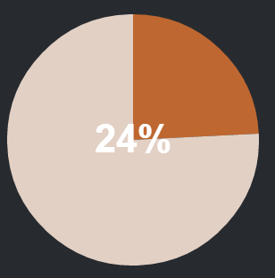
This panel supports only a single query and in the event that multiple queries are broadcasted from some other panel in the same group, it will consider only the first query.
The trends panel allows comparing how the results of a query have changed for the time span selected in the time picker panel as compared to the same time span a specified time ago.
The default value for the 'time ago' parameter is 1 day which can be configured form the panel settings.
This panel supports multiple queries and you can do a trend analysis for different queries in the time picker time span.
For example, the trends panel is configured to compare the query results in the current selected timespan to the same time span 360 minutes ago.
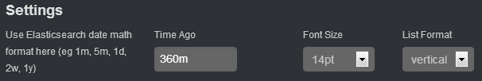
The query is configured to get all logs which have their source host value starting with a "p" and in the last one hour. The trends panel will compare these results to the results obtained by the same query for the same time span 360 minutes ago. From the trends panel, we can see that the results have grown by a factor of 50.27%.
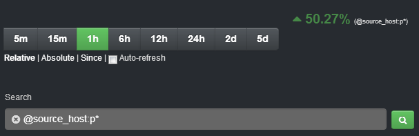
This panel allows adding child panels in a column layout.
For example, you might want to set charts in a column format and then alongside the charts, display the actual data in a Table panel.
The row of panels can be as,
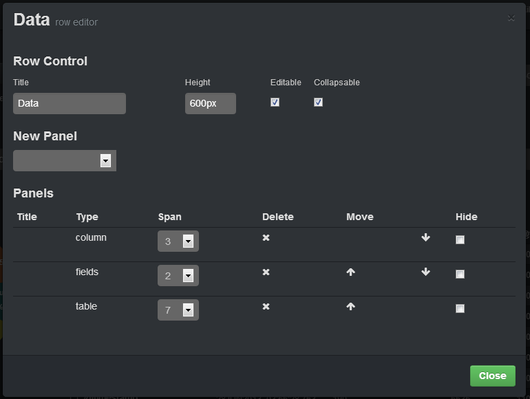
The column panel in turn can have the following panels arranged one below another.
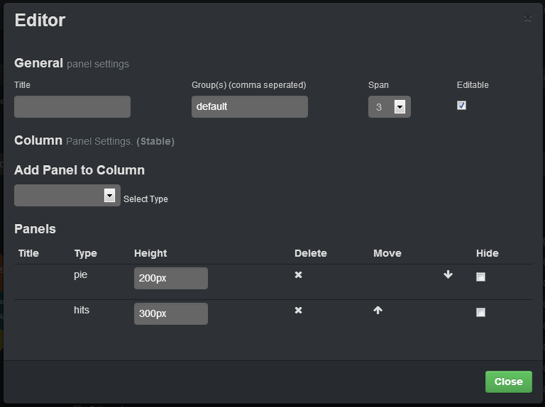
The final layout as shown by the above screenshots will look as follows,
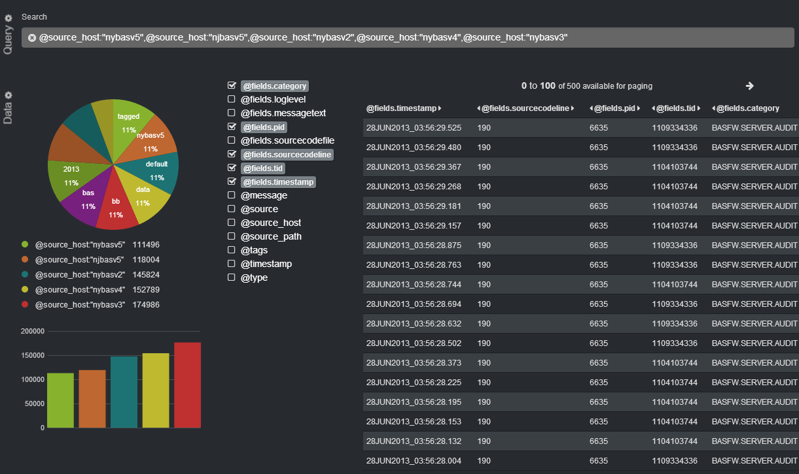
The map panel allows plotting the results as per geographic regions provide the results have a state acronym field.
This panel allows adding text on the dashboards page. It supports markdown, html or plain text. This can be helpful if you want to add pointers to the users of the system.
For example, the screenshot below displays a text panel added above the query panel to direct the user on where he needs to enter the query.
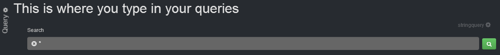
Script calls can be added in a panel's query setting or the string query panel by adding a pipe followed by the corresponding script call with the required arguments.
This script allows extracting data from a field by matching the field's content to a regular expression. The extracted value is populated in a separate column in the table panel. The script will only work with a table panel.
The syntax for the script call is,
<query> | rex expr=<regular expression> field=<field to extract from> displayName=<column header in table panel>
For example, every log record has a message field which can take values like,
"30MAY2013_21:00:27.675 6675:1104677184 INFO m_basfw_server.cpp:190 BASFW.SERVER.AUDIT [ Timestamp=30MAY2013_21:00:27.674-0400 ServiceId=64696 VersionMajor=1 VersionMinor=0 Source=5682 User=9631501 Valid=1 Rule= Reason= ]"
We want to extract the highlighted field value as a separate column in the table panel. The script call will be something like,
* | rex expr=ServiceId=(\d+) field=@message displayName="SERVICE ID"
This will add a column named "SERVICE ID" to the table panel and also to the Fields panel if any. The results will be displayed as,
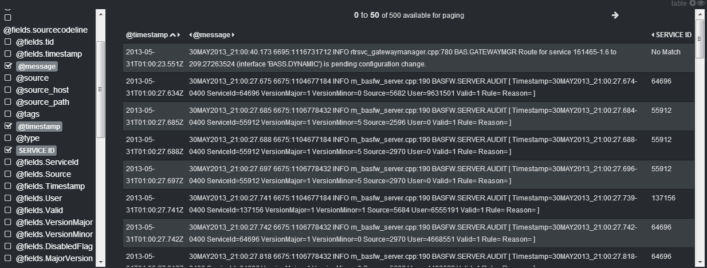
If the argument values for expr, field and displayName contain spaces, they need to be enclosed in double quotes. If they contain double quotes, the quotes need to be escaped.
This script allows viewing aggregated data by a field grouped over values of another field. The aggregate functions available are min, max, avg, sum and count. All aggregate function except count requires a numeric field to be supplied as an argument. The script works in conjunction with a stats panel.
The syntax for the script call is,
<query> | stats <aggregate-function(numeric-field | sub-query)> [as <alias>] by <grouping-field>
Multiple aggregate function calls can be added by separating them with a comma. The sub-query option is only available for the count clause and conversely, the numeric-field option is only allowed for the other aggregate function calls.
Consider an example for the count clause. Say we want to split the results of a query as a count for each source host and also a count by source host in the query results where the field TID takes a particular value.
The query (select all as indicated by a *) along with the script call can be something like,
* | stats count(@fields.tid:16) as "TID 16", count by @source_host
The results will be populated in the stats panel as,
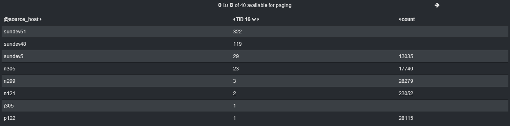
For the other aggregate functions, let's say we want to find the min TID, max PID, mean of PIDs and sum of TIDs for each source host. The query and script call will be something like,
* | stats min(@fields.tid) as "MIN TID", max (@fields.pid) as "MAX PID", avg(@fields.pid) as AVG PID, sum(@fields.tid) as SUM TID by @source_host
The results will be displayed as,
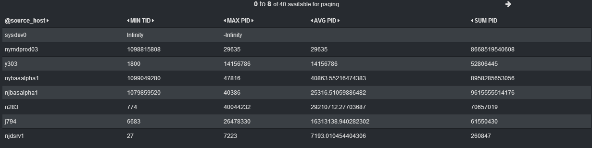